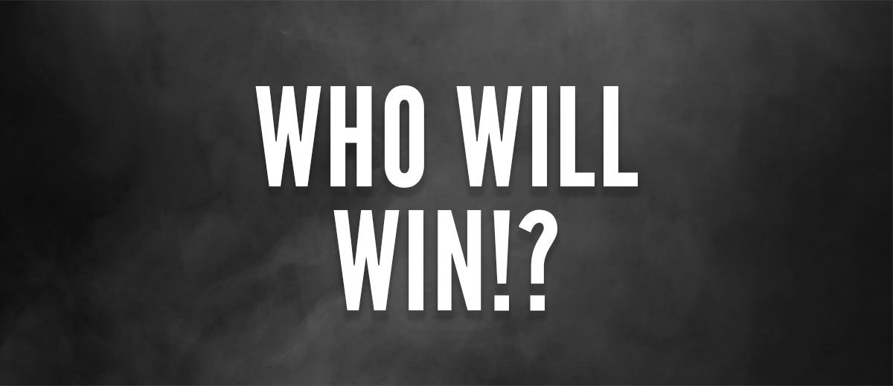

As many of you have realized, there was no decathlon in 2018. Due to the tough schedules of all those involved, we were not able to put on a show, and we apologize. However, 2019 is a new summer and a new start. We have new events, and big things planned. As a reward to all our loyal fans, we are making this decathlon bigger and better than the last. With that being said, we are excited to bring back the the hink vs. leuff decathlon that you, our fans loved so much. This is the official announcement, that the decathlon is returning home to Reading in 2019! Are you ready?
Disclaimer:All content and information on this webpage is the property of the JHJL Entertainment Company. Any use of this content without the express written consent of the JHJL Entertainment Company is prohibited, and violators will be prosecuted to the full extent of the law.
It was January 2017. One night, while eating at one of the finest restaurants in Reading, we had a vision. Two guys who had been good friends for years, would battle it out to determine who was the bigger dawg. The winner would have glory, and the loser would be punished. The first order of business was deciding the competitors. It was decided that the two best people to take part in this rigorous competition would be none other than Jarad Hinkle, and Jared Leuffen. After this, we had to come up with the actual competition. We wanted something that wasn't steered more towards one competitor’s skill, we wanted an even, match. After much discussion we decided the only way to truly make this even was to not just do one event, but multiple. This is when the decathlon was born. Eleven events were created for this upcoming competition. From ping pong to eating, we came up with events that would not only provide a good competition, but a good show. After the events and competitors were decided, a time and location were needed. Staying true to where both competitors were from, we decided to have it right where the idea was born, Reading PA. Now that this was final, we needed a time. After looking at the events and talking, we decided that Summer was the best time for this amazing event to take place. Everything was now set in place. The only thing left to do was train and wait. Come Summer 2017, it was time for the main event. On a warm July day, the competition began. Two dawgs fighting it out, mono v. mono to decide who was the biggest dawg. After a long day of competition, one person was victorious, and one was punished. Due to the tremendous success, it was decided from that point on, that every year we would put on a show. After discussion, it was discussed that their needed to be a rematch between the original competitors. Leuffen and Hinkle would go head to head once again, one looking for revenge, the other looking to maintain his title. Thus, the hink vs. Leuff Summer decathlon was born.
